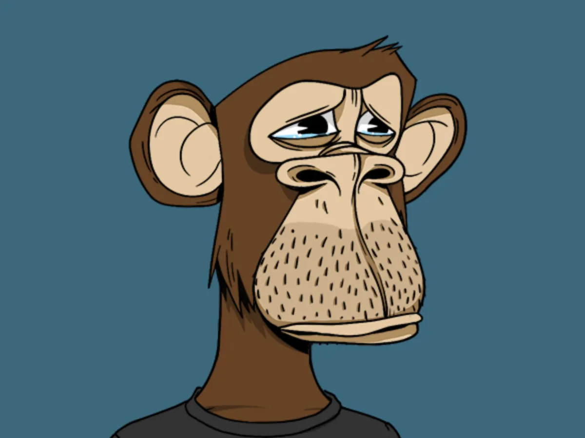
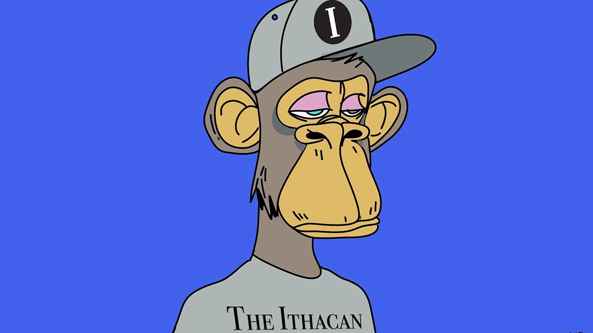
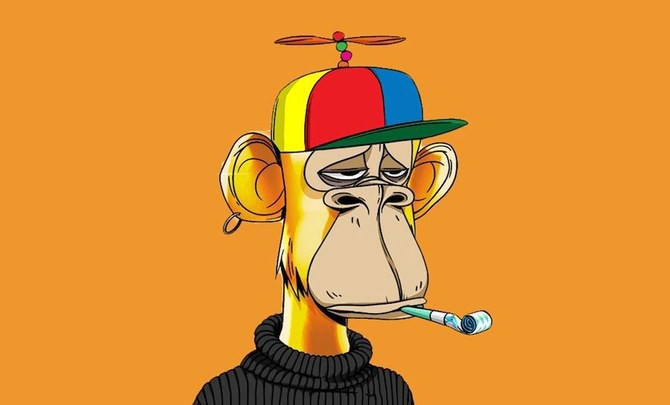

Siya Sachdeva
NFTs, in my opinion, are not a new artistic media in the same way that video art, oil painting, printmaking, or photography were. Even computer-generated art, or digital art, predated NFTs by decades.
Though I don’t see NFT’s as artwork, they can be a fantastic use case for community-based digital art. Numerous of the well-known NFT collections already mentioned in the artist have produced intriguing social experiments in the shape of new communities. While it may be argued that this is art being used for a purpose as opposed to art for art's sake, it is unquestionably effective to unite people around a shared interest.
The use of digital art in the future can be utilized to interact with people, express thoughts and feelings, and influence societal change. Digital artists should make good use of their skills to create positive changes in their communities.
  